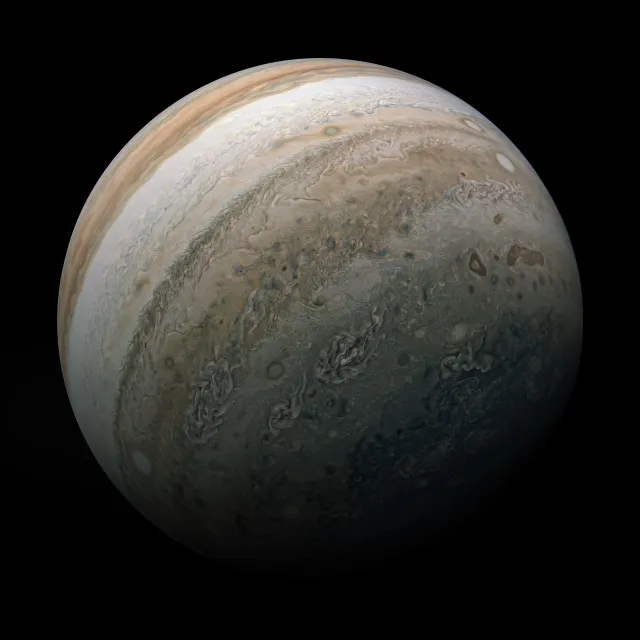
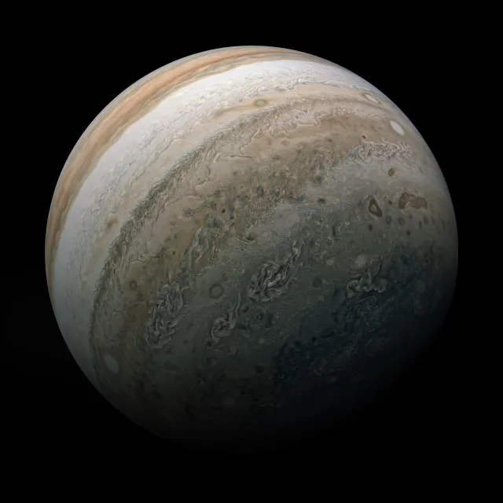
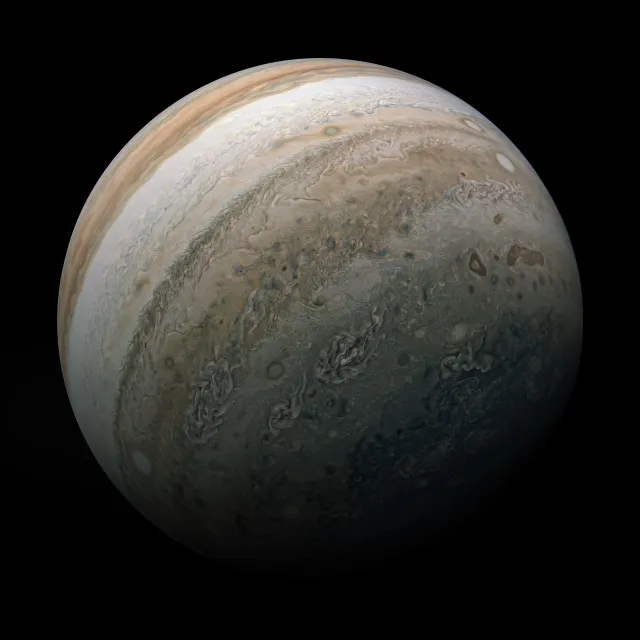

gasoviti gigant - čuvar Zemlje
Jupiter, najveća planeta u Sunčevom sistemu, fascinira astronome i istraživače već vekovima. Poznat po svojoj masivnoj veličini i karakterističnim prstenovima, Jupiter dominira univerzumom svojom prisutnošću. Sačinjen uglavnom od gasova, Jupiter je planetarna divljina koja pruža uvid u formaciju i evoluciju Sunčevog sistema.
Jupiter se ističe svojim impresivnim fizičkim karakteristikama. Sa prečnikom od oko 143.000 kilometara, Jupiter je više od 11 puta veći od Zemlje. Ova ogromna planeta sastoji se uglavnom od vodonika i helijuma, a duboki slojevi gasova stvaraju gustu atmosferu i intenzivne vremenske fenomene, uključujući karakteristične atmosferske pojave poput Velike crvene pege.
Jupiter je okružen raznolikim skupom satelita i prstenova. Sa preko 79 poznatih prirodnih satelita, uključujući velike mesece poput Ganimeda, Kalistu, Ia i Evrope, Jupiter ima složen sistem satelita koji pruža uvid u dinamične procese u okolini planete. Jupiterovi prstenovi, iako manje upadljivi od Saturnovih, dodaju složenost i lepotu ovom planetarnom sistemu.
| Ime Satelita | Poluprečnik (km) | Orbitalna Udaljenost (km) | Orbitalni Period | Osnovne Karakteristike |
|---|---|---|---|---|
| Io | 1,821.6 | 421,700 | 1.77 dana | Najaktivniji vulkanski objekat u Sunčevom sistemu |
| Evropa | 1,560.8 | 670,900 | 3.55 dana | Ledeni omotač sa mogućim podzemnim oceanom |
| Ganimed | 2,634.1 | 1,070,400 | 7.15 dana | Najveći satelit u Sunčevom sistemu, veći od Merkura |
| Kallisto | 2,410.3 | 1,882,700 | 16.69 dana | Najstarija i najkraterizovanija površina u Sunčevom sistemu |
Atmosfera Jupitera je mesto intenzivnih atmosferskih fenomena. Velika crvena pega, ogromna oluja koja traje vekovima, jedan je od najpoznatijih karakteristika Jupitera. Pored toga, vidljivi su i drugi vremenski obrasci, kao što su beli oblaci amonijaka, munje i misteriozne tamne tačke koje se pojavljuju i nestaju.
Jupiter je bio meta mnogih svemirskih misija. Misije poput Galileo i Juno pružile su dragocene podatke o atmosferi, magnetosferi, strukturi unutrašnjosti i satelitima Jupitera. Te misije omogućile su dublje razumevanje ove fascinantne planete i njenog uticaja na Sunčev sistem.
